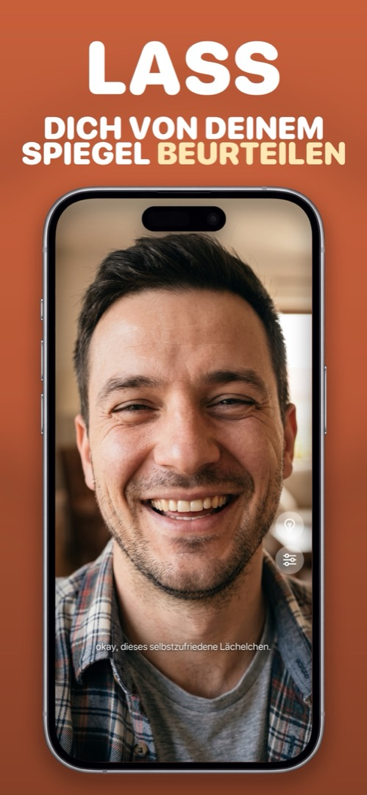

Ist eine Spiegel-App sicher? Das solltest du vor der Installation prüfen
Einer App die Frontkamera zu überlassen, ist ein guter Grund zu zögern. Die meisten Spiegel-Apps sind harmlos; ein paar sind Werbemaschinen mit angeschraubtem Kamerabild. So erkennst du den Unterschied in etwa einer Minute — und das macht Mirrorly mit deiner Kamera.
Warnsignale
- Berechtigungen, die für einen Spiegel keinen Sinn ergeben — Fotomediathek, Kontakte, Standort, Mikrofon. Ein Spiegel braucht die Kamera. Sonst nichts.
- Ein Konto oder eine Registrierung. Es gibt keinen Grund, warum ein Spiegel wissen müsste, wer du bist.
- „Daten, die zum Tracking verwendet werden“ im Datenschutzlabel des App Store. Das sind mitfahrende Werbe-SDKs.
- Eine „kostenlose Testphase“, die in Wahrheit ein Wochenabo ist. Vor dem Tippen den Preis unter dem Laden-Button prüfen.
- Eine Datenschutzerklärung, die nicht sagt, was mit Kamerabildern passiert. Schweigen ist keine Beruhigung.
Gute Zeichen
- Nur Kamera-Berechtigung, angefragt beim Öffnen des Spiegels.
- Eine klare Aussage, dass das Kamerabild auf dem Gerät bleibt und nichts erfasst, gespeichert oder hochgeladen wird.
- Keine Werbung. Kein Konto. Einmalpreis oder kostenlos.
Auf dem eigenen Handy nachsehen
Unter Einstellungen → Datenschutz & Sicherheit → Kamera siehst du jede App mit Kamerazugriff und kannst ihn einzeln abschalten. Unter Einstellungen → Datenschutz & Sicherheit → App-Datenschutzbericht siehst du außerdem, ob eine App Server kontaktiert, die sie nichts angehen.
Was Mirrorly mit deiner Kamera macht
Alles hier stammt aus Mirrorlys Datenschutzerklärung (Englisch), nicht aus Werbetexten:
- Das Kamerabild und die Ausdrucksanalyse auf dem Gerät (die die Kommentare steuert) bleiben auf dem Gerät. Mirrorly hat keinen Auslöser und erfasst, speichert oder überträgt keine Fotos, Videos, Kamerabilder oder Gesichtsdaten.
- Kein Konto. Es wird nie nach Name, E-Mail oder Profil gefragt.
- Keine Werbung.
- Kein Abo. Die ersten drei Spiegel-Checks sind kostenlos; danach schaltet ein einziger Einmalkauf über Apple die App dauerhaft frei. Kaufdaten gehen an Apple und RevenueCat unter einer anonymen Kennung — nie mit deiner Identität verknüpft.
- Der Kamerazugriff wird nur für den Spiegel angefragt und lässt sich jederzeit in den iOS-Einstellungen widerrufen.
So geht's in Mirrorly
Wenn das die Art Spiegel-App ist, die du gesucht hast:
- Mirrorly im App Store installieren und öffnen. Den Kamerazugriff erlauben, wenn gefragt wird — es ist die einzige Berechtigung, die die App will.
- Spiegel, Licht und Zoom benutzen. Nichts, was du siehst, wird aufgezeichnet.
- Nachprüfen? Einstellungen → Datenschutz & Sicherheit → Kamera öffnen. Mirrorly steht dort — und nirgends sonst.

Mirrorly kommt bald in den App Store.
Ein Vollbild-Spiegel fürs iPhone mit Ringlicht, Zoom und maximaler Helligkeit. Drei kostenlose Checks, danach ein einmaliger Kauf — kein Abo, keine gespeicherten Fotos, kein Konto, keine Werbung.